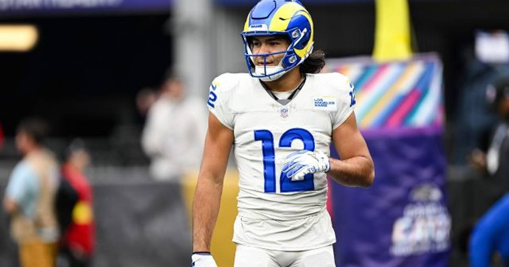

Puka Nacua Up in the Air for Sunday Despite Encouraging Calf Tests
Ian Rapoport says Nacua's calf tests came back 'more minor than anything else' — but he missed Friday's practice, is officially questionable, and the call comes 90 minutes before Sunday's 4:25 p.m. kickoff in Las Vegas.

Disclosure: this post contains affiliate links. I earn a commission on qualifying purchases.
Puka Nacua's calf injury is better news than it first looked — and still a game-time decision. Ian Rapoport reported Friday that the tests on Nacua's calf came back "more minor than anything else," not a significant injury (Rams Wire). But he's up in the air for Sunday's road game against the Raiders, with the final call due 90 minutes before kickoff (NBC Sports).
What happened
Nacua hurt the calf in Thursday's practice. There was no single play — head coach Sean McVay said Friday that Nacua "felt it where he wasn't able to have some of the power and full explosion," and he sat out Friday's session entirely (TSN). He's officially questionable, and he'll work out on the field pregame before the Rams decide ahead of Sunday's 4:25 p.m. ET kickoff in Las Vegas (RotoWire).
The Rams' receiver problem
The timing is brutal. The Rams are already without Davante Adams, placed on injured reserve earlier in the week with a ruptured hamstring (Reuters). If Nacua can't go, Matthew Stafford's targets thin out to Konata Mumpfield, Jordan Whittington, Tutu Atwell, CJ Daniels, and Alex Bachman.
The production at stake
In four games this season, Nacua has 37 catches for 417 yards and one touchdown, plus a rushing score — and he's a two-time Pro Bowler who led the NFL with 129 receptions last season. He already missed two games with a psoas injury. For a 2-4 Rams team that entered the season as Super Bowl favorites, losing both top receivers would be a season-defining hole.
Gear up: Fanatics